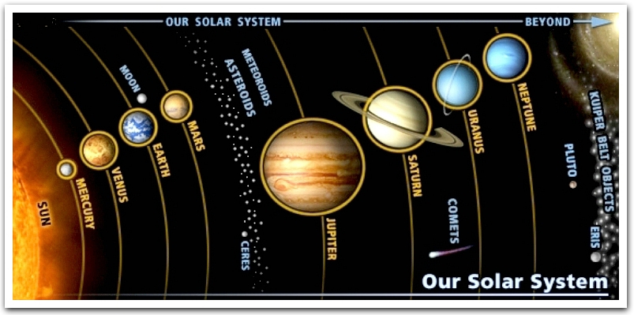

Fun Facts About Planets!!!!

The biggest planet is Jupiter, it can fit 30 moons into it.
Mars is covered in red dust and has many volcanoes.
Pluto never ever gets sun.
There is a lot of strong wind on neptune, 933mph.
The red spot on Jupiter marks a very very big and dangorous gas strom.
Earth is the only planet where living things can live so far.